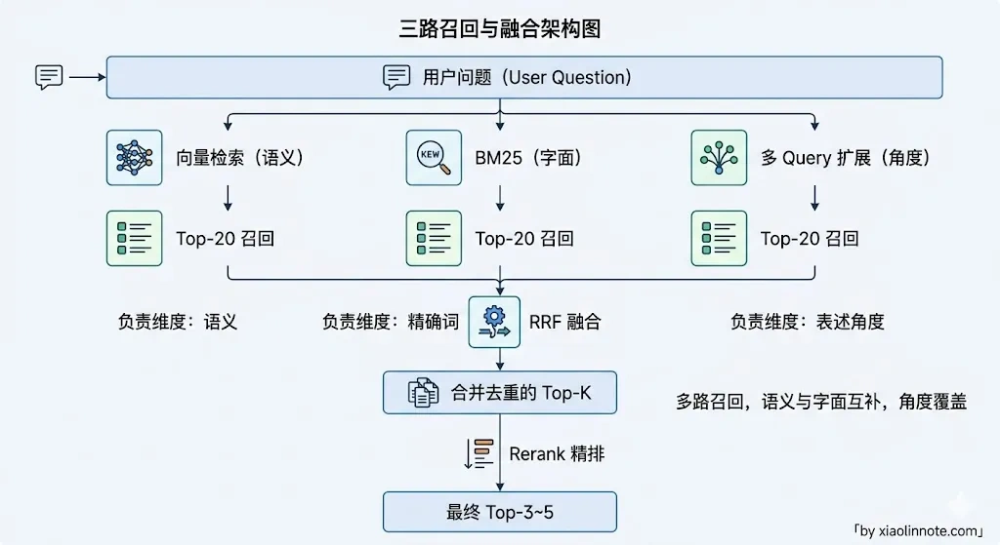
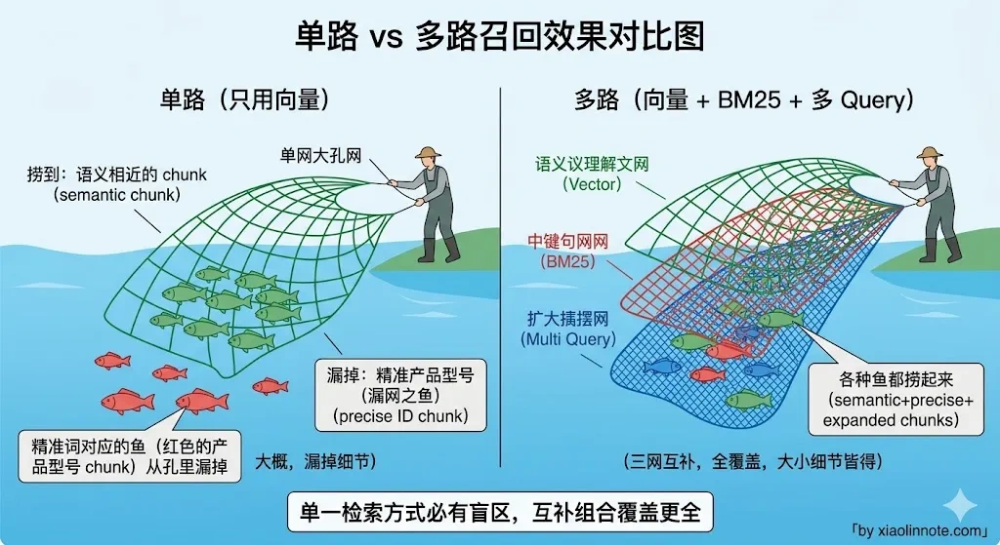
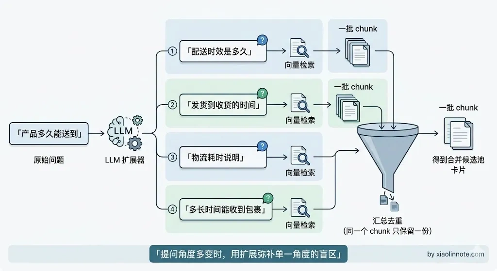
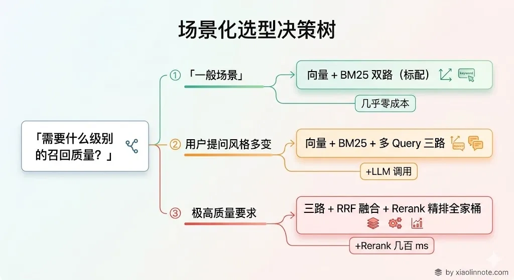

本篇目录
13. 什么是多路召回？具体怎么做？
👔面试官：你的 RAG 系统用的什么检索方式？
🙋♂️我：用的向量检索，把用户问题转成向量去向量库里找相似度最高的，效果挺好的。
👔面试官：那用户搜「RTX 4090 显卡功耗」，你知识库里就写着「RTX 4090」，向量检索召不回来怎么办？
🙋♂️我：那我可以把 top-K 调大一点，或者换个更好的 Embedding 模型，总能找到的。
👔面试官：调大 top-K 召回一堆无关内容有什么用？向量相似度排序在尾部是很平的，Top-20 和 Top-200 的区别只是多塞了一堆跟问题几乎无关的 chunk 进去，正确答案照样没进来，反而把后面 LLM 的注意力稀释了。你有没有想过问题的根源在于向量检索本身对精确词就不敏感？多路召回了解过吗？
看来只靠单路检索是远远不够的，让我来聊聊多路召回的思路。
💡 简要回答
多路召回就是同时用多种不同的检索方式去捞候选内容，然后合并排序，而不是只靠单一的向量检索。我理解核心出发点是向量检索和关键词检索各有盲区，向量检索擅长语义相似，但对精确词语比如产品型号、缩写、数字效果比较差；BM25 关键词检索正好相反，精确匹配强，但不理解语义。我在项目里常用的组合是向量检索加 BM25 混合检索，再加上多 Query 扩展，也就是把用户问题改写成多个版本分别检索。多路的结果用 RRF 算法融合，最后送进 Rerank 精排。
📝 详细解析
什么是多路召回？
多路召回，顾名思义，就是同时用多种不同的检索方式去捞候选内容，最后再把各路结果合并、排序，交给 LLM 生成答案。
和它对应的是「单路召回」，也就是只用一种检索方式，最典型的就是只用向量检索：用户问题转成向量，去向量库里找相似度最高的 Top-K 个 chunk，然后直接喂给 LLM。这套流程在很多场景下能跑起来，但有明显的天花板。
你可能会问，既然向量检索有语义理解能力，为什么还不够用？原因很简单，没有任何一种检索方式是全能的，向量检索有它的盲区，BM25 也有它的盲区，把它们组合起来互相补盲区，总召回质量才会比单路高。
常见的组合是三路：

第一路是向量检索，负责语义层面的覆盖，处理同义词、近义词、不同表达方式，「退货」和「申请售后」在向量空间里是邻居，能互相命中。第二路是BM25 关键词检索，负责精确词匹配，专门处理产品型号、专有名词、数字这类向量检索搞不定的场景。第三路是多 Query 扩展，把用户问题改写成多个不同角度的版本，覆盖更多表述差异，相当于撒了一张更宽的网。
三路各自召回一批候选，再用 RRF 算法把排名融合成一个统一的结果列表，最后送进 Rerank 精排，才把最终上下文交给 LLM。
为什么单路召回不够用?
理解了多路召回是什么之后，自然会追问：单路到底差在哪？为什么非要搞这么复杂？
单纯依赖向量检索是大多数 RAG 系统早期的做法，但它有一个明显的短板：对精确词语的召回效果差。
比如用户问「M4 Pro 芯片的性能参数」，这里的「M4 Pro」是一个专有名词，向量模型可能把它和「苹果最新处理器」的向量拉得很近，但如果知识库里这个词本来就是「M4 Pro」，向量检索不如直接关键词匹配来得准。很多人以为换个更好的 Embedding 模型就能解决，其实不行——这是向量检索「只看语义、不看字面」的固有局限，不管用哪个模型都存在这个问题。
反过来，关键词检索（BM25）对同义词和不同表达方式无能为力。用户问「怎么退货」，文档里写的是「申请售后」，词没重叠，BM25 完全召回不到。
两种检索方式的盲区恰好互补，这就是「多路召回」的出发点。理解了这个互补关系，后面每一路的作用就非常清晰了。

第一路：向量检索（Dense Retrieval）
向量检索是多路召回的基础一路。核心做法是：把文档和用户问题都用 Embedding 模型转成向量，然后用余弦相似度在向量库里找最近的 top-K 个 chunk。
它擅长语义匹配，同义词、不同表达方式都能覆盖，但对精确词语（产品型号、缩写）效果不佳——而这恰好是第二路 BM25 的强项。
第二路：BM25 关键词检索（Sparse Retrieval）
理解了向量检索搞不定精确词语这个问题，BM25 的加入就顺理成章了。
BM25 是 TF-IDF 的改进版本，根据词频和文档频率给每个词打分，找出包含查询词最多、且这些词在整个语料里不太常见（也就是区分度高）的文档。它的核心逻辑是：一个词在这篇文档里出现多（词频高），但在整个知识库里出现少（区分度高），说明这个词对这篇文档很具代表性，权重就高。本质上是在问：「这个词有没有『代表』这篇文档？」
中文场景下用 BM25 需要先做分词（比如用 jieba 切词），再对分词后的词列表建索引和检索。实现上就是对每个 chunk 先切词建索引，查询时同样切词后计算 BM25 分数排序。纯文本匹配，速度极快，对精确词语、数字、专有名词的召回效果非常好。
前两路解决了「语义匹配」和「精确词匹配」的问题，但还有一个场景它们都覆盖不到——用户提问的角度和文档表述的角度压根不一样，不是同义词的问题，而是整个视角的差异。这就需要第三路出场了。
第三路：多 Query 扩展召回
为什么还需要第三路？
因为用户提问的角度和知识库里文档的表述角度不一致，这不是同义词能解决的。比如用户问「产品多久能送到」，文档里写的是「配送时效说明」，两句话角度完全不同，向量相似度可能不高，BM25 也匹配不到关键词。
多 Query 扩展的做法是：用 LLM 把用户的原始问题改写成 3～5 个不同角度的版本，分别去检索，然后把所有结果合并去重。这样只要有一个改写版本和文档的表述对上了，就能把正确的内容召回来，就像拦截网越宽，捕到鱼的概率越高。

实现上，先调 LLM 生成多个问题变体，每个变体分别跑向量检索，最后把所有结果汇总并去重（同一个 chunk 被多个变体召回时只保留一份）。代价是多了几次 LLM 调用，但在用户提问风格多变的场景下，召回覆盖率能提升 10%～20%。
结果融合：RRF 算法
三路召回各自拿回了一批候选，接下来的问题就是：怎么把三路结果合成一份？每一路都有自己的排序结果，分数单位不一样（向量检索是余弦相似度，BM25 是 TF-IDF 分数），没法直接加权平均。你可能会想，能不能归一化之后再加权？理论上可以，但实际上各路分数的分布差异很大，归一化效果不稳定，工程上也更复杂。
RRF（Reciprocal Rank Fusion，倒数排名融合）是目前最常用的融合方法，它只用排名而不用原始分数，巧妙地绕开了分数不可比的问题：
其中 k 是平滑参数（通常取 60），rank 是文档在某一路结果里的排名。
RRF 的直觉很好理解：不管各路分数怎么算（因为向量相似度和 BM25 分数本来就没有可比性），只看排名。一个文档在多路检索里都排名靠前，它的 RRF 综合分就高，就像多位评委都给高分的选手，最后的综合排名就高。这个方法不需要训练、计算量极小，工程落地成本很低。
值得注意的是，RRF 本质上还是粗排，适合在 Rerank 之前做候选集合并。如果对最终召回精度要求很高，还是要在 RRF 融合之后接一个 Cross-Encoder 结构的精排模型（比如 bge-reranker-v2-m3）做深度打分，把真正相关的内容筛到最前。
实战建议
不是每个场景都需要三路全上，按业务特点来选：
知识库里有大量专有名词、产品型号、数字的场景（比如电商、IT 文档），向量 + BM25 双路是标配，收益很明显。
用户提问方式多变、和文档表述差异大的场景（比如客服问答），加上多 Query 扩展，召回覆盖率能提升 10%～20%。
对召回质量要求极高的场景，三路全上，最后接 Rerank，把融合结果精排一遍再给 LLM，把质量做到天花板。

把三种召回方式的特点对比一下，方便选型：
| 召回方式 | 擅长 | 短板 | 适合场景 |
|---|---|---|---|
| 向量检索 | 语义相似、同义词、不同表达 | 精确词语、数字、专有名词 | 通用语义检索 |
| BM25 关键词 | 精确词匹配、专有名词 | 同义词、语义相关但词不重叠 | 有大量精确词语的知识库 |
| 多 Query 扩展 | 覆盖不同表述角度 | 增加 LLM 调用开销 | 用户提问风格多变的场景 |
🎯 面试总结
回到开头的场景：用户搜「RTX 4090 显卡功耗」，向量检索召不回来，调大 top-K 或者换模型都不是治本之策。问题的根源是向量检索对精确词天然不敏感，这不是模型能力的问题，而是检索方式本身的局限。
多路召回的思路很简单：既然没有任何一种检索方式是全能的，那就同时走多条路，向量检索管语义，BM25 管精确词，多 Query 扩展管表述差异，三路结果用 RRF 融合，互为补充，覆盖面远比单路广。
面试时把「为什么单路不够」和「多路怎么组合、怎么融合」这两条线讲清楚，就到位了。